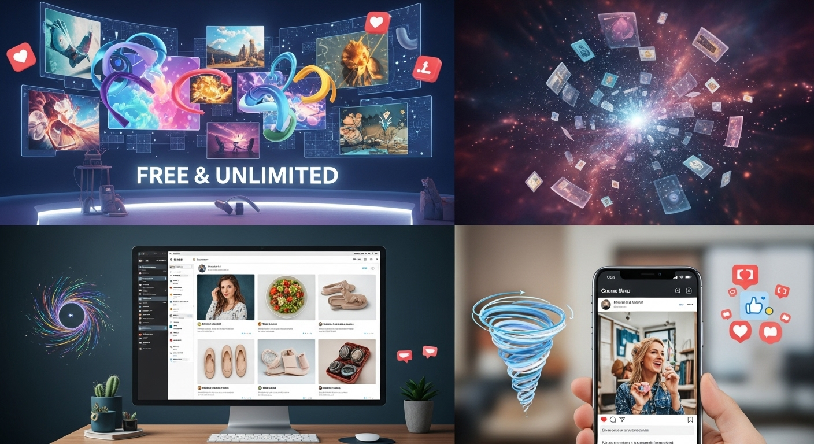
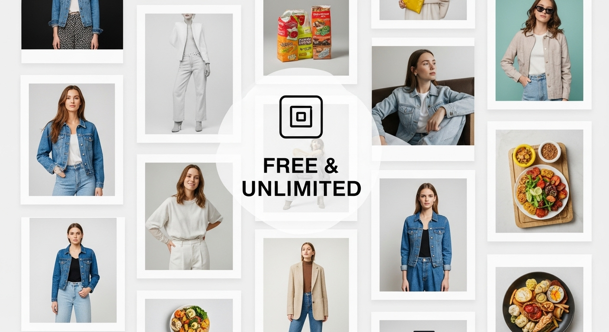
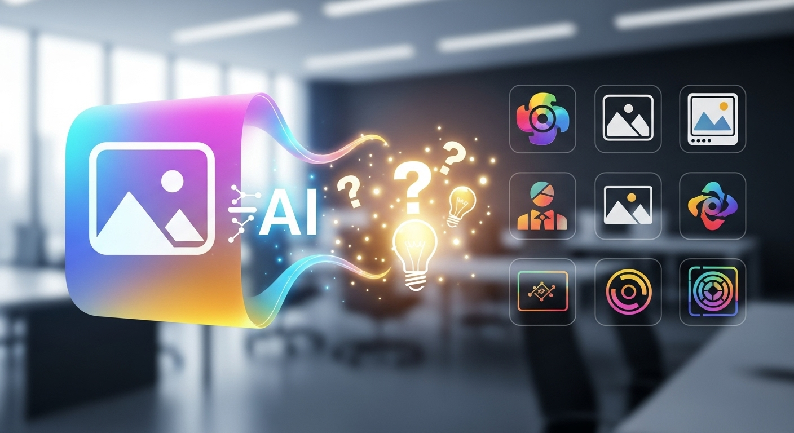
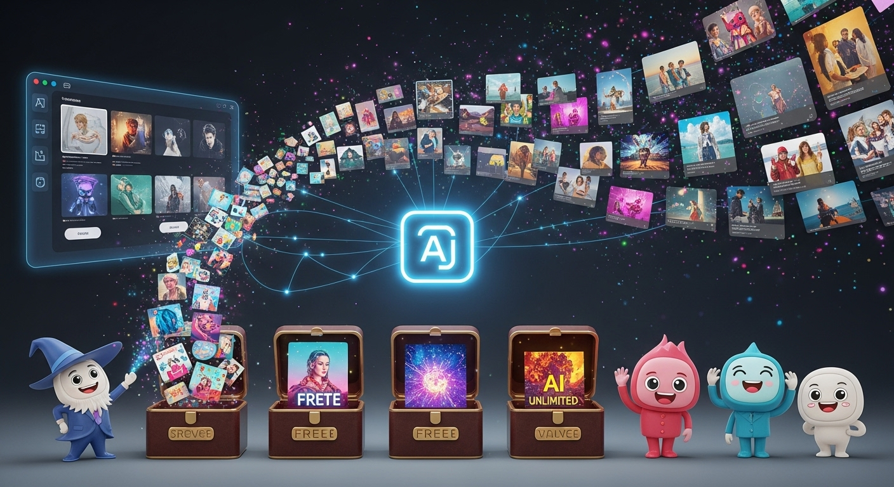
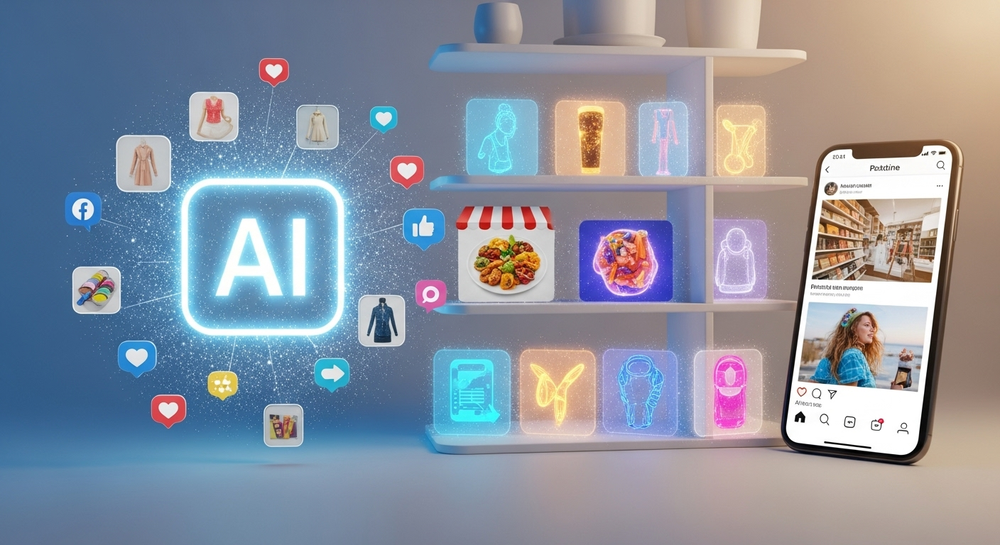
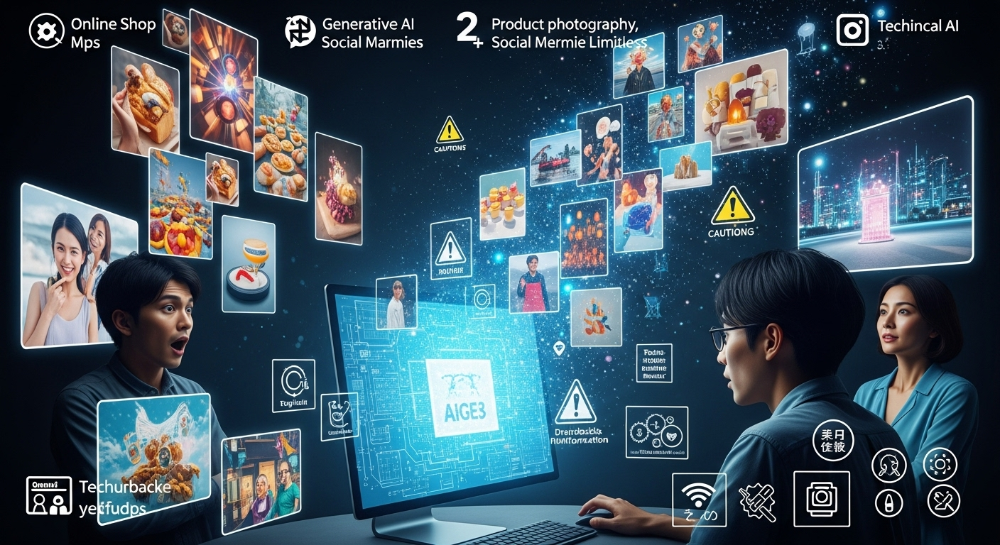
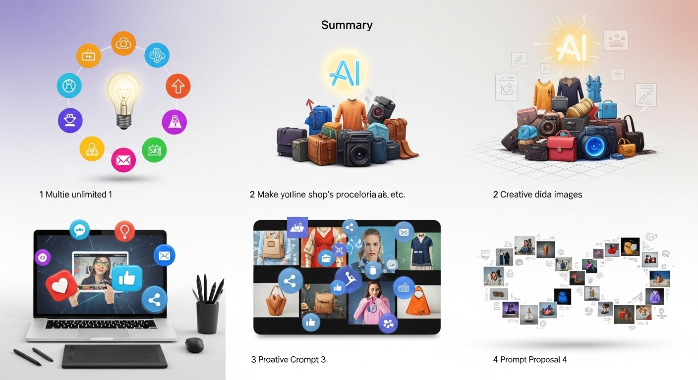

生成AI画像を無料で無制限に！オンラインショップの商品画像・SNS投稿を魅力的に

導入

オンラインで商品を販売するハンドメイド作家さんや、個人ショップの運営者の皆様にとって、商品の魅力を最大限に引き出す画像は、まさに「売上を左右する生命線」と言っても過言ではありません。美しい写真や印象的なビジュアルは、お客様の目を惹きつけ、商品の価値を伝え、最終的な購入へと導く重要な要素となります。しかし、プロのカメラマンに依頼する費用、高価な撮影機材の準備、モデルの手配、そして何よりも撮影から編集、レタッチにかかる膨大な時間と労力は、多くの運営者にとって大きな負担となっているのではないでしょうか。
「もっと手軽に、もっと自由に、もっと魅力的な画像が作れたら…」
そんな願いを抱える皆様に朗報です。近年急速に進化を遂げている「生成AI画像」は、この長年の悩みを解決する画期的なテクノロジーとして、今、大きな注目を集めています。まるで魔法のように、テキストの指示（プロンプト）を入力するだけで、瞬時に高品質な画像を生成してくれるAIツールが続々と登場しているのです。しかも、その中には「無料で無制限に」利用できるものも少なくありません。
この記事では、生成AI画像がハンドメイド販売やオンラインショップ運営にどのような可能性をもたらすのかを深く掘り下げ、画像作成の課題をどのように解決し、どのようなメリットが得られるのかを具体的に解説していきます。さらに、数ある生成AI画像ツールの中から、特に「無料かつ無制限」で利用できるおすすめツールを厳選してご紹介。ツールの選び方から、プロ並みの画像を生成するためのプロンプト作成のコツ、そしてオンラインショップやSNSでの効果的な活用方法まで、初心者の方でも安心して取り組めるよう、優しく丁寧にガイドします。
もちろん、新しい技術にはメリットだけでなく、注意すべき点も存在します。著作権や利用規約、生成される画像のクオリティのばらつきなど、知っておくべきデメリットと対策についても触れ、皆様が生成AI画像を安心して、そして最大限に活用できるよう、多角的な視点から情報を提供いたします。
さあ、この革新的なテクノロジーを味方につけ、あなたのオンラインショップやSNS投稿を、今よりもっと魅力的に、そして効果的に変革していきましょう。未来の販売戦略の鍵が、まさにこの生成AI画像にあるのです。
生成AI画像が拓く！ハンドメイド販売の新たな可能性
ハンドメイド作品を心を込めて作り上げる作家さんにとって、その作品を多くの人に届け、感動を共有することは大きな喜びであり、同時にビジネスとしての成功を目指す上での重要な目標です。しかし、どれほど素晴らしい作品であっても、その魅力を視覚的に伝えられなければ、お客様の心に響くことは難しいでしょう。ここで、生成AI画像が、ハンドメイド販売における新たな地平を切り拓く可能性を秘めているのです。
オンラインショップ運営者が抱える画像作成の悩み
オンラインショップを運営する上で、高品質な商品画像は集客と売上を大きく左右する要因です。しかし、多くのハンドメイド作家さんや個人ショップの運営者様は、画像作成に関して以下のような様々な悩みを抱えています。
まず、最も切実な問題の一つが「写真撮影のスキル不足」です。スマートフォンのカメラ性能は向上したとはいえ、プロのようなライティングや構図、背景設定を独学で習得するのは容易ではありません。せっかくの作品も、撮影技術が伴わないために、その魅力が半減してしまうケースも少なくありません。光の当たり方一つで商品の印象は大きく変わり、暗すぎたり、影が入りすぎたりするだけで、お客様は商品の細部を正確に把握できず、購入意欲が低下してしまいます。
次に、「機材コストと撮影場所の確保」も大きな壁となります。プロ仕様のカメラやレンズ、三脚、照明機材などを揃えるには、多額の初期投資が必要です。また、自宅での撮影では、生活感が出てしまったり、十分なスペースや背景が確保できなかったりすることも多々あります。おしゃれな背景や小道具を用意しようとすれば、それ自体に費用や手間がかかり、準備の段階で疲弊してしまうことも少なくありません。
さらに、「モデルの手配」も悩みの種です。特にアクセサリーやアパレルなどの身につける商品は、実際に人が着用している画像があることで、サイズ感や着用イメージが伝わりやすくなり、お客様の購買意欲を大きく刺激します。しかし、プロのモデルを雇う費用は高額であり、友人や知人に依頼するにも限界があります。自身でモデルを務めるにしても、撮影とモデルを両立させるのは至難の業です。
そして、撮影が終わった後には、「編集の手間」が待っています。色味の調整、明るさの補正、不要なものの削除、トリミングなど、一つ一つの画像を丁寧にレタッチするには、専門的な知識と画像編集ソフトの操作スキルが求められます。これらの作業は非常に時間がかかり、特に多くの商品を扱うショップでは、画像編集だけで一日の大半を費やしてしまうことも珍しくありません。
これらの悩みが積み重なることで、多くの作家さんは「時間的制約」に直面します。作品制作、材料の仕入れ、顧客対応、発送業務など、多岐にわたる業務の中で、画像作成に割ける時間は限られています。結果として、新しい商品をなかなかアップできなかったり、既存商品の画像を更新できなかったりすることで、販売機会を逃してしまうことにも繋がりかねません。また、競合ショップが増える中で「オリジナリティの欠如」も大きな課題です。似たような商品が並ぶ中で、いかに自身の作品を際立たせるか、その鍵を握るのが魅力的な画像なのです。これらの状況は、作家さんのモチベーション低下にも繋がり、せっかくの情熱が削がれてしまうこともあります。
生成AI画像が解決する課題と得られるメリット
このようなオンラインショップ運営者が抱える画像作成の悩みを、生成AI画像はどのように解決し、どのようなメリットをもたらすのでしょうか。その可能性は、まさに革命的と言えるでしょう。
まず、生成AI画像は「コスト削減」と「時間短縮」という二つの大きな課題を一挙に解決します。高価なカメラ機材や照明、スタジオレンタル、プロのカメラマンやモデルへの依頼費用は一切不要です。必要なのは、インターネットに接続されたパソコンやスマートフォンと、アイデアを具体的に伝えるためのテキスト（プロンプト）だけです。これにより、初期投資を大幅に抑えながら、高品質な画像を短時間で量産することが可能になります。例えば、これまで数時間かかっていた撮影と編集作業が、数分で完了することも夢ではありません。この削減された時間は、作品制作や顧客対応、マーケティングなど、他の重要な業務に充てることができ、ビジネス全体の効率化に大きく貢献します。
次に、生成AI画像は「クオリティの向上」と「多様な表現の実現」を可能にします。たとえ写真撮影の経験が少ない方でも、適切なプロンプトを入力するだけで、まるでプロが撮影したかのような美しいライティング、完璧な構図、そして魅力的な背景を持つ画像を生成できます。例えば、シンプルなアクセサリーを、煌びやかな宝石店のようなショーケースに飾ったり、自然光が降り注ぐカフェのテラス席に置いたり、あるいは幻想的な水中世界に浮かべたりと、現実では難しい様々なシチュエーションを瞬時に作り出すことができます。これにより、商品の持つ世界観を最大限に表現し、お客様に強い印象を与えることが可能になります。
さらに、「オリジナリティの創出」と「競合との差別化」も大きなメリットです。既存のストックフォトでは得られない、あなたのブランドイメージに完全に合致した、唯一無二の画像を生成できます。他のショップと同じような画像を使うのではなく、あなたの作品のためだけに生み出された背景やシチュエーションは、ブランドの個性を際立たせ、お客様の記憶に残る強いインパクトを与えます。これにより、競合との差別化を図り、独自のファンを獲得するための強力な武器となるでしょう。
また、生成AI画像は「最新トレンドへの迅速な対応」も可能にします。SNSで流行している背景色、構図、写真のスタイルなどを、プロンプトに反映させるだけで簡単に取り入れることができます。季節ごとのイベント（クリスマス、バレンタイン、ハロウィンなど）に合わせた特別な画像を、手間なく迅速に作成し、タイムリーな情報発信を行うことで、お客様の関心を引きつけ、集客力アップに繋げることが期待できます。
加えて、生成AIは「試行錯誤の自由度」を飛躍的に高めます。気に入った画像が生成されなくても、プロンプトを少し修正するだけで、何度でも新しい画像を生成し直すことができます。様々なバリエーションを試し、最も商品の魅力を引き出す一枚を見つけるまで、心ゆくまで調整を続けることが可能です。この圧倒的な自由度は、従来の撮影では考えられないほど、クリエイティブな探求を可能にします。
このように、生成AI画像は、オンラインショップ運営者が抱える多くの課題を解決し、コスト、時間、クオリティ、オリジナリティ、そしてトレンド対応といった多岐にわたる面で、計り知れないメリットをもたらします。まさに、ハンドメイド販売の新たな可能性を拓く、強力なツールとなることでしょう。
生成AI画像ツールの選び方と活用ポイント

生成AI画像ツールは日々進化しており、その種類も豊富です。どのツールを選べば良いのか迷ってしまう方もいらっしゃるかもしれません。ここでは、特にハンドメイド販売やオンラインショップ運営者の皆様が、ご自身のニーズに合ったツールを見つけ、効果的に活用するための選び方とポイントを詳しく解説します。
選び方１．無料かつ無制限で使えるツールの特徴
まず、多くの個人事業主や小規模ビジネスにとって非常に重要なのが、「無料かつ無制限」で利用できるかどうかという点です。初期費用やランニングコストを抑えたい、まずは試してみたいという方にとっては、この条件は必須と言えるでしょう。
「無料」のツールは数多く存在しますが、その多くは無料版に何らかの制限が設けられています。例えば、生成できる画像の枚数に上限があったり、特定の機能が利用できなかったり、生成される画像に透かし（ウォーターマーク）が入ったりする場合があります。オンラインショップの商品画像として利用する場合、透かしが入っていては信頼性が損なわれるため、透かしが入らない無料ツールを選ぶことが重要です。また、解像度が低い、生成速度が遅いといった制限も考えられます。
「無制限」という言葉も、ツールによって解釈が異なります。完全に枚数無制限で生成できるツールもあれば、「一日の生成枚数に上限があるが、実質的にはほとんど無制限に近い」といったケースもあります。また、無料版ではクレジット（ポイント）が付与され、そのクレジットを消費して画像を生成する形式が多く、クレジットがなくなれば生成できなくなる、あるいは一定時間待つ必要がある、といった制限があることも理解しておく必要があります。ハンドメイド作品の画像作成では、様々な角度からの写真や、異なる背景での画像など、多くのバリエーションを試行錯誤しながら生成することになるため、できるだけ枚数制限が緩やかな、あるいは完全に無制限に近いツールを選ぶことが望ましいです。
無料かつ無制限のツールを選ぶ際のポイントとしては、以下の点を重視しましょう。
- 透かしが入らないか: 商品画像として利用する場合、これは最も重要な条件の一つです。
- 生成枚数やクレジットの制限: 実質的にどれくらいの画像を生成できるのか。試行錯誤に十分な枚数を確保できるか。
- 機能制限: 無料版で利用できる機能が、目的（商品画像の作成）に十分であるか。例えば、アスペクト比の調整、スタイル変更、ネガティブプロンプトの利用などができるか。
- 画質の制限: 無料版でも十分な解像度の画像を生成できるか。オンラインショップやSNSでの表示に耐えうるクオリティか。
これらの点を比較検討し、ご自身の用途に最も適した「無料かつ無制限に近い」ツールを見つけることが、賢い第一歩となります。まずはいくつかのツールを試してみて、使い勝手や生成される画像の傾向を把握することをおすすめします。
選び方２．商用利用の可否や利用規約の確認
生成AI画像ツールを選ぶ上で、無料・無制限であること以上に、あるいはそれ以上に重要なのが「商用利用の可否」と「利用規約の確認」です。オンラインショップの商品画像やSNS投稿に利用するということは、直接的に収益に繋がる活動であるため、著作権やライセンスに関する問題をクリアにしておく必要があります。
多くの生成AIツールは、個人利用は無料でも、商用利用には有料プランへの加入が必要だったり、特定の条件を満たす必要があったりします。中には、無料版でも商用利用が可能なツールも存在しますが、その場合でも必ず利用規約を隅々まで確認することが不可欠です。
確認すべき主なポイントは以下の通りです。
- 商用利用の明記: 「商用利用可」と明確に記載されているか。または、「特定の条件下で商用利用可」となっている場合は、その条件を理解しているか。
- 著作権の帰属: 生成された画像の著作権は誰に帰属するのか。ユーザーに帰属するのか、ツール提供元に帰属するのか、あるいは共有財産となるのか。一般的には、ユーザーに著作権が帰属する、または利用許諾が与えられるケースが多いですが、確認が必要です。
- クレジット表記の要否: 商用利用する際に、ツール名や開発元などのクレジット表記が義務付けられているか。
- 禁止事項: 生成してはいけないコンテンツ（暴力、性的表現、差別的表現など）や、利用してはいけない目的（違法行為、誤情報拡散など）が定められているか。
- 知的財産権に関する免責: AIが学習したデータに著作物が含まれる可能性や、生成された画像が既存の著作物と偶然にも類似してしまった場合の責任の所在について、ツール提供元がどのように対応するかの記載。多くの場合、ユーザーが自己責任で利用することが求められます。
これらの利用規約は、ツールの公式サイトやヘルプページに記載されています。英語で書かれている場合もありますが、翻訳ツールなどを活用して、必ず内容を理解するように努めましょう。不明な点があれば、ツールのサポートに問い合わせることも検討してください。
特に注意すべきは、AIが生成した画像に関する「著作権」の扱いです。現状、AI生成物の著作権に関する法的な解釈は国や地域によって異なり、まだ完全に確立されているわけではありません。そのため、生成された画像が既存の著作物と酷似してしまった場合や、特定の人物やブランドを想起させるような画像が生成されてしまった場合など、予期せぬトラブルに巻き込まれるリスクもゼロではありません。
「自分は規約を読んだから大丈夫」と安易に考えるのではなく、「もしかしたら問題が発生するかもしれない」という意識を持って、常に最新の情報を確認し、リスクを理解した上で利用することが、安心して生成AI画像を商用利用するための重要な心構えとなります。万が一のトラブルを避けるためにも、利用規約の確認は決して怠らないようにしましょう。
選び方３．日本語対応や操作性で選ぶポイント
生成AI画像ツールを選ぶ際、特に初心者の方や英語に苦手意識がある方にとって、「日本語対応」と「操作性」は非常に重要なポイントとなります。どれほど高性能なツールであっても、使いこなせなければ意味がありません。
まず「日本語対応」についてです。プロンプト（テキスト指示）を入力する際に、日本語で自然に指示できるかどうかは、画像生成の精度と直結します。英語のみ対応のツールの場合、翻訳ツールを介してプロンプトを作成することになりますが、その過程でニュアンスが失われたり、意図しない解釈をされたりする可能性があります。日本語に完全に、あるいは高精度で対応しているツールであれば、より直感的に、より正確に、あなたのイメージをAIに伝えることができるでしょう。ツールのインターフェース自体が日本語で表示されているかどうかも、操作のしやすさに大きく影響します。設定項目やメニューが日本語であれば、迷うことなく各種機能を使いこなすことができます。
次に「操作性」です。これは、ツールのUI（ユーザーインターフェース）/UX（ユーザーエクスペリエンス）がどれだけ直感的で分かりやすいかという点です。
- シンプルなインターフェース: 初めて利用する人でも、どこをクリックすれば良いか、何を入力すれば良いかが一目でわかるような、ごちゃごちゃしていないシンプルなデザインが理想です。
- 直感的な操作: プロンプト入力欄が分かりやすく、生成ボタンも明瞭であるか。生成された画像がどこに表示されるか、保存方法が簡単かなど、一連の操作がスムーズに行えるかが重要です。
- プレビュー機能: プロンプトを入力している最中や、設定を変更している最中に、ある程度の完成イメージをプレビューできる機能があれば、試行錯誤の効率が格段に上がります。
- チュートリアルやヘルプの充実: 初めてのユーザー向けに、基本的な使い方を解説したチュートリアル動画や、困ったときに参照できるヘルプドキュメントが日本語で用意されていると安心です。
- コミュニティサポート: ユーザーコミュニティが存在し、そこで疑問を解決したり、他のユーザーのプロンプト例を参考にしたりできる環境があると、学習が加速します。特にDiscordベースのツールでは、活発なコミュニティが存在することが多いです。
- 生成速度と安定性: プロンプト入力から画像生成までの速度が快適であること、また、サーバーが安定しており、途中でエラーが発生しにくいことも、ストレスなく利用するための重要な要素です。
これらのポイントを考慮してツールを選ぶことで、AI画像生成の学習コストを抑え、より効率的に、そして楽しく画像作成に取り組むことができるでしょう。特に、画像作成に慣れていない方にとっては、使いやすいツールを選ぶことが、継続して利用するための鍵となります。まずは、いくつかの日本語対応で操作性の良いツールを試してみて、ご自身の感覚に最もフィットするものを見つけてください。
今すぐ使える！おすすめの【生成AI画像】無料・無制限ツール5選

ここでは、オンラインショップ運営やSNS投稿にすぐに活用できる、特におすすめの生成AI画像ツールを厳選してご紹介します。無料版でも十分に活用できるものを中心に、それぞれの特徴や活用法を詳しく解説していきます。「無料・無制限」と一口に言っても、ツールによってその解釈や条件が異なる場合があるため、各ツールの具体的な利用規約を必ずご自身で確認してください。
おすすめツール１．Midjourney（無料版）の特徴と活用法
Midjourney（ミッドジャーニー）は、その圧倒的な画像生成能力と芸術性の高さで、世界中のクリエイターから絶大な支持を受けているAI画像生成ツールです。特に、写真のようなリアルな画像から、イラスト、コンセプトアートまで、幅広いスタイルで高品質な画像を生成できる点が大きな魅力です。
特徴:
- 卓越した芸術性: 他のAIツールと比較しても、Midjourneyが生成する画像は非常に芸術的で、繊細な色使いや光の表現、構図のバランスが優れています。まるでプロのアーティストが描いたかのような、見栄えのする画像を簡単に生み出すことができます。
- シンプルな操作性: 主にDiscordというチャットツール上でコマンド（プロンプト）を入力して画像を生成します。一見すると複雑に思えるかもしれませんが、基本的なコマンドはシンプルで、慣れれば直感的に操作できます。
- 活発なコミュニティ: Discordサーバー内には活発なユーザーコミュニティがあり、他のユーザーが生成した画像やプロンプトを参考にしたり、質問したりすることができます。これにより、プロンプト作成のヒントを得たり、新しい表現方法を学んだりする機会が豊富にあります。
無料版の制限と活用法:
Midjourneyは、以前は無料トライアルが提供されていましたが、現在は基本的に有料プランへの移行が推奨されています。しかし、時期によっては一時的に無料トライアルが再開されたり、特定のイベントで無料クレジットが付与されたりする場合があります。また、一部の機能はDiscordサーバー内で公開されている画像からインスピレーションを得るなど、間接的に活用できる場合もあります。
もし無料トライアルが利用できる場合、または将来的に利用可能になった場合の活用法としては、以下が考えられます。
- プロンプト作成の練習: 無料クレジットを使って、様々なプロンプトを試してみてください。どのような言葉がどのような画像を生み出すのか、Midjourneyの「クセ」を理解することが、有料版移行後も効率的に活用するための鍵となります。
- スタイルの探求: あなたのハンドメイド作品に合う、特定の画風や雰囲気を見つけるために、多様なスタイルを試してみましょう。「水彩画風」「油絵風」「サイバーパンク風」「ミニマリスト」など、様々なキーワードを組み合わせてみてください。
- コンセプトアートの生成: まだ形になっていない新商品のアイデアを視覚化するために利用することもできます。例えば、「未来的なデザインのネックレス」といった抽象的なプロンプトから、具体的なインスピレーションを得ることが可能です。
- 背景画像の生成: 商品そのものの画像ではなく、オンラインショップのバナーやSNS投稿の背景として利用する画像を生成するのも良いでしょう。Midjourneyの得意とする美しい風景や抽象的な背景は、あなたの作品をより引き立ててくれます。
Midjourneyは、その画像生成能力の高さから、有料プランに移行する価値が十分にあるツールです。無料版でその可能性を少しでも体験し、将来的な導入を検討するのも良いでしょう。
おすすめツール２．StableDiffusion（無料版）の特徴と活用法
Stable Diffusion（ステーブルディフュージョン）は、オープンソースで公開されているAI画像生成モデルであり、その柔軟性とカスタマイズ性の高さから、世界中の開発者やクリエイターに愛されています。多くの無料オンラインサービスや、ローカル環境で動作するアプリケーションの基盤となっています。
特徴:
- 高いカスタマイズ性: Stable Diffusionはオープンソースであるため、様々な派生モデルや拡張機能が開発されています。これにより、特定のスタイル（アニメ、写実、アートなど）に特化した画像を生成したり、より細かな調整を行ったりすることが可能です。
- 多様な利用形態:
- オンラインサービス: DreamStudio（Stability AI公式）、Mage.space、Hugging Face Spacesなど、Webブラウザ上で手軽に利用できるサービスが多数存在します。これらはPCのスペックを気にせず利用できる利点があります。
- ローカル環境: 自身のPCにインストールして利用する「Automatic1111版 Stable Diffusion web UI」などが有名です。高いPCスペックが必要ですが、完全に無料で無制限に、そしてオフラインでも利用できる点が最大のメリットです。
- 詳細な調整が可能: プロンプトだけでなく、ネガティブプロンプト（生成してほしくない要素）、CFGスケール（プロンプトへの忠実度）、サンプリングメソッド、ステップ数など、様々なパラメータを細かく調整することで、理想の画像に近づけることができます。
無料版の活用法:
Stable Diffusionの「無料・無制限」は、主に以下の二つの形態で実現されます。
- オンラインサービスの無料クレジット: DreamStudioなどのオンラインサービスでは、新規登録時に無料クレジットが付与されることが多く、この範囲内で画像を生成できます。クレジットがなくなると有料プランへの移行が必要になりますが、多くのサービスが毎日少量の無料クレジットを配布したり、広告視聴でクレジットを獲得できる仕組みを提供したりしています。
- 活用法: まずはこれらの無料クレジットを使って、Stable Diffusionの基本的なプロンプトの書き方や、各種パラメータが画像に与える影響を試してみましょう。特に、あなたの作品に合うスタイルや背景を見つけるために、様々なキーワードや設定を試すのに最適です。
- ローカル環境での利用（Automatic1111など）: 自身のPCにStable Diffusionをインストールして利用する場合、一度セットアップが完了すれば、完全に無料で、枚数制限なく画像を生成できます。ただし、高性能なグラフィックボード（NVIDIA製）を搭載したPCが必要となります。
- 活用法: PCのスペックが許すのであれば、この方法が最も「無料・無制限」に近いです。
- 徹底的な試行錯誤: 何枚でも生成できるため、納得がいくまでプロンプトや設定を調整し、理想の画像を追求できます。
- モデルの切り替え: 多くのカスタムモデル（checkpointファイル）をダウンロードして利用できるため、あなたの作品のジャンルや表現したい雰囲気に合わせて、最適なモデルを試すことができます。例えば、写実的な商品画像に特化したモデルや、特定のイラストスタイルに強いモデルなどがあります。
- Inpainting/Outpainting: 生成された画像の一部を修正したり（Inpainting）、画像の範囲を広げたり（Outpainting）する機能も利用できるため、より完璧な商品画像に仕上げることが可能です。
- 活用法: PCのスペックが許すのであれば、この方法が最も「無料・無制限」に近いです。
Stable Diffusionは、その自由度の高さから、プロンプト作成や設定調整に多少の学習が必要ですが、使いこなせれば非常に強力なツールとなります。まずはオンラインサービスで試してみて、その可能性を感じたら、ローカル環境での利用も検討してみるのが良いでしょう。
おすすめツール３．CanvaのMagicMedia（無料版）で画像作成
Canva（キャンバ）は、デザイン初心者でもプロ並みのデザインを簡単に作成できるオンラインデザインツールとして広く知られています。そのCanvaが提供するAI画像生成機能が「Magic Media（マジックメディア）」です。Canvaの強みである使いやすさとデザインテンプレートの豊富さを活かし、AI画像をデザインに組み込むことができる点が大きな魅力です。
特徴:
- 圧倒的な操作性: Canvaのインターフェースは非常に直感的で、誰でも迷うことなく画像を生成・編集できます。プロンプト入力欄もシンプルで、すぐに画像を生成できます。
- デザインツールとの連携: 生成したAI画像をそのままCanvaのデザインプロジェクトに挿入し、文字入れ、背景の追加、他の素材との組み合わせなど、様々な編集を加えることができます。オンラインショップのバナー、SNS投稿、商品紹介カードなど、デザイン全体をCanvaで完結させたい場合に非常に便利です。
- 豊富なテンプレート: Canvaには数多くのデザインテンプレートが用意されており、AI生成画像をこれらのテンプレートに組み込むことで、短時間でプロフェッショナルなデザインを作成できます。
- 日本語対応: プロンプトも日本語で入力可能で、インターフェースも完全に日本語対応しているため、英語が苦手な方でも安心して利用できます。
無料版の活用法:
CanvaのMagic Mediaは、無料プランでも利用できますが、生成できる画像の枚数に制限があります。通常、無料プランでは1日あたり数枚から十数枚程度の画像を生成できるクレジットが付与されます（変更される可能性あり）。
- デザインに組み込む: 生成したAI画像を、Canvaの既存のテンプレートやご自身で作成したデザインに組み込む形で活用しましょう。例えば、以下のような使い方が考えられます。
- 商品画像の背景: シンプルな商品写真の背景を、AIで生成した幻想的な風景やおしゃれなインテリアに置き換える。
- SNS投稿のアイキャッチ: あなたの作品のコンセプトに合わせたAI画像を生成し、キャッチーなテキストを加えてSNS投稿のメインビジュアルにする。
- オンラインショップのバナー: 季節のイベントやセール告知用のバナーに、AIで生成した魅力的なビジュアルを配置する。
- プロンプトの練習: 無料クレジットの範囲内で、様々なプロンプトを試して、どのような画像が生成されるかを確認しましょう。Canvaは比較的シンプルなプロンプトでも質の高い画像を生成しやすい傾向があります。
- アイデア出し: 新商品のインスピレーションを得るために、抽象的なキーワードで画像を生成してみるのも良いでしょう。例えば、「森の中の妖精のアクセサリー」といったイメージから、具体的なデザインのヒントを得られるかもしれません。
CanvaのMagic Mediaは、AI画像生成だけでなく、その後のデザイン編集まで一貫して行える点が最大の強みです。特に、デザイン作業に時間をかけたくない方や、デザイン初心者の方には、非常に心強い味方となるでしょう。無料クレジットを上手に活用し、あなたのオンラインショップやSNS投稿をより魅力的に彩りましょう。
おすすめツール４．その他の無料AI画像生成ツール
上記でご紹介したツール以外にも、無料で利用できるAI画像生成ツールは多数存在します。それぞれに特徴があり、得意な画像や操作性が異なりますので、いくつか試してみて、ご自身の用途や好みに合ったものを見つけるのがおすすめです。
- DALL-E 3 (ChatGPT Plus経由など):
- 特徴: OpenAIが開発したDALL-Eシリーズの最新版で、特にプロンプトの理解度が高く、複雑な指示にも高い精度で対応します。ChatGPT Plusの有料プランに加入することで、ChatGPTのインターフェースから直接DALL-E 3を利用できます。
- 無料版の活用法: 現在、DALL-E 3はMicrosoftの「Bing Image Creator」を通じて無料で利用可能です。Microsoftアカウントがあれば誰でも利用でき、毎日一定数のブースト（高速生成クレジット）が付与されます。ブーストがなくなっても生成は可能ですが、速度が遅くなります。
- ポイント: プロンプトの解釈能力が非常に高いため、より詳細で具体的な指示をしたい場合に強みを発揮します。生成された画像の品質も高く、商用利用も可能です（Bing Image Creatorの利用規約による）。
- Bing Image Creator (Microsoft Designer):
- 特徴: Microsoftが提供する無料のAI画像生成ツールで、DALL-E 3の技術をベースにしています。Microsoftアカウントがあれば誰でも無料で利用でき、毎日付与される「ブースト」という高速生成クレジットを使って、素早く画像を生成できます。
- 無料版の活用法: 毎日提供されるブーストを利用して、オンラインショップの商品画像の背景や、SNS投稿用のユニークなビジュアルを生成できます。比較的、写実的な画像やイラスト調の画像も得意です。
- ポイント: 完全無料で利用でき、プロンプトの精度も高いため、まずAI画像生成を試してみたい初心者の方におすすめです。
- Adobe Firefly (無料版):
- 特徴: Adobeが提供する生成AIサービスで、PhotoshopやIllustratorなどのAdobe製品との連携を前提としています。倫理的な学習データ（Adobe Stockなど）を使用しているため、著作権侵害のリスクが低いとされています。
- 無料版の活用法: 無料版では、月に一定数の「生成クレジット」が付与され、この範囲内でテキストから画像を生成したり、テキスト効果、生成塗りつぶしなどの機能を利用できます。
- ポイント: クオリティが高く、商用利用も可能（Adobeの利用規約による）。特にAdobe製品を普段から利用している方にとっては、ワークフローに組み込みやすいメリットがあります。生成クレジットの範囲内で、高品質な商品画像やバナー素材の作成に活用できます。
- Leonardo.Ai:
- 特徴: Stable DiffusionをベースにしたAI画像生成ツールで、非常に多様なモデルや機能を提供しています。特に、細かい設定や調整をしたいユーザーに人気です。
- 無料版の活用法: 毎日一定数の無料クレジットが付与され、その範囲内で画像を生成できます。無料クレジットは毎日リセットされるため、継続的に利用可能です。商用利用も可能です。
- ポイント: プロンプトの入力だけでなく、画像から画像を生成する「Image2Image」や、特定のスタイルを学習させる「Custom Models」など、高度な機能も利用できます。幅広い表現を試したい方におすすめです。
これらのツールは、それぞれ異なる強みを持っています。まずは、いくつか試してみて、ご自身の作品のジャンルや、目指すビジュアルイメージに最も合うツールを見つけることが大切です。無料版でも十分に活用できる機能が提供されていることが多いため、気軽に試してみて、AI画像生成の楽しさと可能性を体験してみてください。
プロ並み画像を生成！効果的なプロンプト作成のコツと実践例
生成AI画像ツールの性能がどれほど高くても、あなたのイメージをAIに正確に伝える「プロンプト」の質が、生成される画像のクオリティを大きく左右します。まるでAIと会話するように、的確な指示を出すことで、素人でもプロ並みの高品質な画像を生成することが可能になります。ここでは、効果的なプロンプト作成のコツと実践例を詳しく解説します。
コツ１．基本のプロンプト構成を理解する
プロンプトは、AIに対する「指示書」のようなものです。ただ単にキーワードを並べるのではなく、明確な構成を意識することで、AIはあなたの意図をより正確に理解し、理想に近い画像を生成してくれます。基本的なプロンプト構成は、以下の要素から成り立っています。
- 被写体（Subject）: 何を描写してほしいのか、メインとなる対象物を具体的に指定します。
- 例:
A delicate silver necklace,Handmade ceramic mug,Wooden carved bear figurine
- 例:
- 背景（Background/Environment）: 被写体が置かれる場所や環境、雰囲気を描写します。
- 例:
on a rustic wooden table,in a minimalist studio with soft lighting,against a backdrop of blooming cherry blossoms
- 例:
- スタイル/画風（Style/Artistic Direction）: どのようなタッチや表現で画像を生成してほしいかを指定します。
- 例:
photorealistic,oil painting,watercolor,anime style,cinematic lighting
- 例:
- 雰囲気/感情（Atmosphere/Mood）: 画像全体が持つ雰囲気や感情を伝えます。
- 例:
cozy and warm,elegant and luxurious,vibrant and energetic,serene and peaceful
- 例:
- 色（Color Scheme）: 主要な色や色調を指定します。
- 例:
pastel colors,monochromatic blue,vibrant reds and golds,earthy tones
- 例:
- 構図/アングル（Composition/Angle）: どのような構図や視点で画像を生成してほしいかを指定します。
- 例:
close-up shot,wide angle,macro photography,eye-level view,overhead shot
- 例:
- 画質/品質（Quality/Details）: 画像の品質に関する指示です。
- 例:
ultra detailed,8k resolution,high quality,sharp focus,intricate details
- 例:
これらの要素を組み合わせて、一つの文章のように記述したり、カンマで区切ってキーワードを並べたりします。例えば、「繊細な銀のネックレスが、ミニマリストなスタジオの木製テーブルに、柔らかい照明で照らされて、マクロ撮影で、非常に詳細に」といったイメージを、AIが理解できる形で表現するのです。
ネガティブプロンプトの活用:
多くのAI画像生成ツールには、「ネガティブプロンプト」（Negative Prompt）という機能があります。これは、「生成してほしくない要素」をAIに伝えるためのものです。例えば、ugly, deformed, low quality, blurry（醜い、変形した、低品質、ぼやけた）といった一般的なネガティブプロンプトは、画像の品質を向上させるためによく使用されます。商品画像であれば、shadows, reflections, bad lighting, watermark（影、反射、悪い照明、透かし）などを追加すると良いでしょう。ネガティブプロンプトを適切に使うことで、意図しない要素が画像に混入するのを防ぎ、より洗練された画像を生成できます。
コツ２．魅力を引き出すキーワード選定のポイント
プロンプトの基本構成を理解したら、次に重要なのは、あなたの作品の魅力を最大限に引き出すキーワードを厳選することです。AIは言葉のニュアンスを読み取るため、具体的で詳細な言葉を選ぶことが成功の鍵となります。
- 具体的な形容詞・副詞を使う:
- 単に「ネックレス」と書くのではなく、「繊細な銀のネックレス」「煌めくクリスタルのピアス」「手作りの温かみのある陶器のマグカップ」のように、素材、色、質感、形状、特徴を具体的に描写する形容詞を加えましょう。
- 「美しい」だけでなく、「優雅な」「洗練された」「素朴な」「アンティーク調の」など、より具体的な感情や印象を伝える言葉を選びます。
- 照明についても、「明るい」だけでなく、「柔らかな自然光」「ドラマチックな逆光」「暖かみのある間接照明」など、具体的な描写を加えることで、AIが光の質を正確に再現しやすくなります。
- 専門用語を活用する:
- 写真撮影の専門用語は、構図や光の指定に非常に有効です。
macro photography（マクロ撮影）：商品の細部を強調したい時bokeh（ボケ）：背景をぼかして被写体を際立たせたい時golden hour（ゴールデンアワー）：夕暮れ時の暖かく美しい光を表現したい時rule of thirds（三分割法）：バランスの取れた構図にしたい時depth of field（被写界深度）：ピントの合う範囲を指定したい時
- 美術の専門用語も、特定の画風や雰囲気を指定するのに役立ちます。
impressionistic（印象派風）、surrealistic（シュールレアリスム風）、Art Deco（アールデコ調）など。
- 写真撮影の専門用語は、構図や光の指定に非常に有効です。
- ブランドイメージを伝える:
- あなたのオンラインショップや作品が持つ「世界観」や「ブランドイメージ」を構成するキーワードを盛り込みましょう。「高級感のある」「素朴でナチュラルな」「モダンで洗練された」「ヴィンテージ風の」など、一貫したイメージを保つことが大切です。
- 例えば、「北欧風のインテリア」や「日本の伝統的な美意識」など、特定の文化や地域性を加えることで、より独自の雰囲気を創出できます。
- 試行錯誤を恐れない:
- 一度で完璧なプロンプトを作成できるとは限りません。生成された画像を見て、どこがイメージと違うのか、どの言葉を修正すれば良いのかを考え、何度も試行錯誤を繰り返すことが上達の近道です。
- 少しずつキーワードを追加したり、削除したり、順序を入れ替えたりすることで、AIの反応を観察し、より効果的なプロンプトを見つけていきましょう。
これらのキーワード選定のポイントを意識することで、AIはあなたの頭の中にあるイメージをより鮮明に描き出し、プロが撮影したかのような、あるいはそれ以上の魅力的な画像を生成してくれるでしょう。
コツ３．アクセサリー画像に特化したプロンプト例
ハンドメイドのアクセサリーは、その繊細なデザインや素材の輝きをいかに魅力的に伝えるかが重要です。ここでは、アクセサリー画像をプロ並みに見せるための具体的なプロンプト例と、その意図する効果を解説します。
例1：繊細なネックレスのクローズアップ
- プロンプト:
A delicate silver pendant necklace with a tiny sapphire, macro photography, shallow depth of field, soft natural lighting, elegant minimalist background, sharp focus, ultra detailed, 8k, photorealistic - ネガティブプロンプト:
blurry, dark, ugly, reflections, shadows, bad lighting, watermark, deformed, low quality - 意図:
delicate silver pendant necklace with a tiny sapphire: 被写体を具体的に指定し、素材と特徴を明確に。macro photography: アクセサリーの細部を強調する撮影手法。shallow depth of field: 背景を大きくぼかし、ネックレスにピントを集中させ、プロのような雰囲気を出す。soft natural lighting: 柔らかく上品な光で、素材の輝きを自然に引き出す。elegant minimalist background: 主役であるネックレスを際立たせるため、シンプルで上品な背景に。sharp focus, ultra detailed, 8k, photorealistic: 高画質でリアルな仕上がりを要求。
例2：華やかなピアスの着用イメージ
- プロンプト:
A pair of sparkling gold hoop earrings with intricate pearl details, worn by a woman with elegant updo, soft studio lighting, against a blurred luxurious silk fabric background, fashion photography, high resolution, professional, studio shot - ネガティブプロンプト:
ugly, deformed, extra fingers, bad anatomy, bad lighting, blurry, watermark, low quality, shadows on face - 意図:
sparkling gold hoop earrings with intricate pearl details: ピアスの素材、形状、特徴を詳細に。worn by a woman with elegant updo: 実際の着用イメージを伝えるため、モデルの存在と髪型を指定。アップヘアはピアスを際立たせる。soft studio lighting: スタジオ撮影のような均一で美しい光。blurred luxurious silk fabric background: 高級感を演出する背景をぼかしで。fashion photography, high resolution, professional, studio shot: ファッション誌のようなクオリティを要求。
例3：アンティーク調リングの雰囲気写真
- プロンプト:
An antique style emerald ring with ornate silver carvings, placed on a vintage wooden box, surrounded by dried flowers and old lace, warm ambient light, moody atmosphere, cinematic, rustic, autumn colors, detailed texture - ネガティブプロンプト:
modern, bright white, blurry, low quality, plastic, new, clean, harsh light - 意図:
antique style emerald ring with ornate silver carvings: リングのデザインと特徴を具体的に。placed on a vintage wooden box, surrounded by dried flowers and old lace: 世界観を構築する小道具と背景を指定。warm ambient light, moody atmosphere: 暖かく、情緒的な雰囲気を演出。cinematic, rustic, autumn colors, detailed texture: 映画のような画質、素朴な質感、秋らしい色合いで世界観を強化。
例4：ブレスレットの複数アングル
- プロンプト:
A set of three handmade beaded bracelets in earthy tones, displayed on a smooth river stone, various angles, soft diffused light, clean white background, product photography, studio setup, sharp focus, high contrast, natural shadows - ネガティブプロンプト:
one bracelet, messy, ugly, blurry, bad lighting, reflections, watermark - 意図:
set of three handmade beaded bracelets in earthy tones: 複数個の商品と、その特徴、色調を記述。displayed on a smooth river stone: 自然素材の台座でナチュラル感を演出。various angles: 複数の角度からの画像を生成するよう促す（ツールによっては自動で複数のバリエーションを生成）。soft diffused light, clean white background: 商品を引き立てるためのシンプルで均一な照明と背景。product photography, studio setup, sharp focus, high contrast, natural shadows: 商品写真としてのクオリティと、自然な影で立体感を出す。
これらの例を参考に、あなたの作品の素材、色、形、そして伝えたい世界観に合わせて、キーワードを組み合わせてみてください。最初は難しく感じるかもしれませんが、様々なプロンプトを試すうちに、AIがどのような言葉に反応しやすいか、どのような指示が効果的か、感覚がつかめてくるはずです。
コツ４．画像を思い通りにする調整テクニック
プロンプトだけでは表現しきれない細かな調整や、生成された画像をさらに理想に近づけるためのテクニックがいくつか存在します。これらの調整テクニックを駆使することで、AI画像をより「思い通り」にコントロールできるようになります。
- パラメータの活用:
多くのAI画像生成ツールには、プロンプト以外にも画像を調整するための様々なパラメータが用意されています。
- アスペクト比（Aspect Ratio）: 画像の縦横比を指定します。
--ar 16:9（横長）、--ar 9:16（縦長）、--ar 1:1（正方形）など。オンラインショップの商品一覧やSNS投稿のフォーマットに合わせて調整しましょう。 - スタイル（Style）: ツールの特定のスタイルモデルを指定します。例えば、Midjourneyでは
--style rawでより写真的なリアルさを追求したり、--v 5.2のようにバージョンを指定したりします。 - シード値（Seed）: 画像生成の初期値となる乱数です。同じプロンプトでもシード値が異なると全く違う画像が生成されます。気に入った画像のシード値を記録しておけば、その画像と似た雰囲気や構図の画像を再生成したり、少しだけ要素を変更したバリエーションを作成したりする際に非常に役立ちます。
- CFGスケール（Classifier Free Guidance Scale）: プロンプトへの忠実度を調整する値です。Stable Diffusionなどで利用されます。値を高くするとプロンプトに忠実に、低くするとAIの創造性が発揮されやすくなります。
- サンプリングメソッド/ステップ数: 画像生成の過程を制御する設定です。これらの値を調整することで、画像の細部や質感が変化します。
- アスペクト比（Aspect Ratio）: 画像の縦横比を指定します。
- プロンプトの重み付け:
特定のキーワードをより強くAIに認識させたい場合、プロンプトの重み付け（Prompt Weighting）というテクニックが有効です。ツールによって記述方法は異なりますが、例えばMidjourneyではキーワードの後に
::と数値を付けたり、括弧で囲んだりすることで、そのキーワードの重要度を調整できます。- 例:
A necklace::2 with a flower::1 background（ネックレスをより強調）
このテクニックを使うことで、複数の要素があるプロンプトの中で、あなたが最も強調したい部分をAIに明確に伝えることができます。
- 例:
- 画像からの画像生成（Image to Image / img2img）:
既存の画像（あなたの作品の写真など）をAIに読み込ませ、それを元に新しい画像を生成する機能です。
- 活用例: あなたが撮影した商品の写真に、AIで生成した魅力的な背景を合成したり、写真の雰囲気を特定の画風（例えば油絵風）に変えたりすることができます。元の画像の構図や色合いを保ちつつ、新しい要素を追加したい場合に非常に強力です。
- 特に、Stable Diffusionのローカル版では、この機能を使って写真のクオリティを向上させたり、様々なバリエーションを生み出したりすることが可能です。
- 部分的な修正（Inpainting / Outpainting）:
- Inpainting（インペインティング）: 生成された画像の一部をマスクで覆い、その部分をAIに再生成させる機能です。例えば、生成された画像に不要なものが写り込んでしまった場合や、商品の色を部分的に変更したい場合などに利用できます。
- Outpainting（アウトペインティング）: 画像の境界線を越えて、その外側をAIに生成させる機能です。生成された画像が少し狭すぎると感じた場合や、より広い背景を追加したい場合に、画像の範囲を自然に広げることができます。
これらの機能は、生成された画像を完璧に近づけるための強力な後処理テクニックです。
- 複数回生成と選択:
どんなに完璧なプロンプトを作成しても、AIは毎回少しずつ異なる画像を生成します。そのため、一度の生成で満足のいく画像が得られなくても、何度か生成を繰り返すことで、より良い結果が得られることがあります。生成された複数の画像の中から、最もイメージに近いものを選び、それをさらに調整していくというプロセスが一般的です。
これらの調整テクニックを駆使することで、プロンプトだけでは表現しきれなかった細かなニュアンスや、より具体的なイメージをAIに伝え、あなたの作品の魅力を最大限に引き出す、プロ並みの画像を生成することが可能になるでしょう。
生成AI画像をオンラインショップやSNSで活用するメリット

生成AI画像は、オンラインで商品を販売する皆様にとって、単なる画像作成ツールにとどまらない、強力なビジネス変革の可能性を秘めています。その活用は、コスト削減から集客力アップまで、多岐にわたるメリットをもたらします。
メリット１．コストを抑えて高品質な画像を量産できる
オンラインショップ運営における最大の課題の一つが、高品質な画像作成にかかるコストです。プロのカメラマンに依頼すれば数万円から数十万円、モデルを起用すればさらに費用がかかります。また、自分で撮影する場合でも、高価なカメラ機材や照明、背景布、小道具などを揃えるには初期投資が必要です。しかし、生成AI画像を導入することで、これらのコストを劇的に削減することが可能になります。
生成AIツールの中には、無料で利用できるものが多数存在し、これらを活用すれば、初期投資をほぼゼロに抑えながら、プロが撮影したかのような高品質な画像を生成できます。例えば、あなたのハンドメイドアクセサリーを、まるで高級ブランドの広告のような洗練された背景に配置したり、自然光が降り注ぐ美しい風景の中に溶け込ませたりする画像を、費用をかけずに手に入れることができます。
さらに、AIはテキストの指示一つで画像を生成するため、短時間で大量のバリエーションを作成することが可能です。一つの商品に対して、異なる角度、異なる背景、異なる雰囲気の画像を何枚でも生成し、お客様に商品の魅力を多角的に伝えることができます。従来の撮影方法では、このような量産は時間と費用が膨大にかかるため、現実的ではありませんでした。AIを活用すれば、例えば季節ごとのイベント（クリスマス、バレンタイン、母の日など）に合わせた特別な画像を、その都度撮影し直す手間なく、迅速に作成し、タイムリーなプロモーションを展開することも容易になります。
この「コストを抑えて高品質な画像を量産できる」というメリットは、特に予算が限られている個人事業主や小規模ショップにとって、非常に大きな意味を持ちます。削減できたコストは、商品の材料費や新商品の開発、あるいはマーケティング費用など、ビジネスの成長に直結する他の分野に投資することができ、より効率的な経営を実現する手助けとなるでしょう。
メリット２．オリジナリティで競合と差別化できる
オンライン市場は競争が激しく、多くのショップが似たような商品を販売しています。その中で、いかに自身のブランドや商品を際立たせ、お客様の記憶に残る存在になるかは、成功の鍵となります。生成AI画像は、この「オリジナリティ」を追求し、競合との差別化を図る上で非常に強力なツールとなります。
従来のオンラインショップでは、商品の画像として、自分で撮影したものか、ストックフォトサービスから購入したものが主流でした。しかし、ストックフォトは多くの人が利用するため、他のショップと似たような画像になってしまいがちです。また、自分で撮影する場合も、撮影スキルや機材、撮影環境の制約から、表現の幅が限られてしまうことがあります。
生成AI画像を使えば、あなたのブランドイメージや商品のコンセプトに完全に合致した、唯一無二のビジュアルをゼロから生み出すことができます。例えば、あなたの作品が持つ「物語」や「世界観」を、AIにしか描けないような幻想的な背景や、これまでにないユニークなシチュエーションで表現することが可能です。
- 独自の背景: 既存のストックフォトにはない、あなたの作品のためだけに作られた特別な背景を生成できます。例えば、シンプルなリングを、宇宙空間に浮かぶ惑星のリングとして表現したり、手作りの陶器を、古民家の縁側で自然光に照らされた情景に置いたり、といった具合です。
- 創造的なシチュエーション: 商品が実際に使われているシーンを、現実では再現が難しいような創造的な形で表現できます。例えば、アクセサリーが身につけられた人物のクローズアップを、特定の歴史的時代やファンタジーの世界観で描くことも可能です。
- ブランドの一貫性: プロンプトを工夫することで、生成される画像全体に一貫したトーンやスタイルを持たせることができます。これにより、オンラインショップやSNS全体で統一されたブランドイメージを構築し、お客様にあなたのブランドの世界観を強く印象付けることができるでしょう。
このように、生成AI画像は、他のショップには真似できないような、あなただけの「視覚的アイデンティティ」を確立する手助けとなります。これにより、お客様の目を惹きつけ、強く記憶に残る存在となり、結果として競合との差別化に成功し、独自のファンを獲得することに繋がるでしょう。
メリット３．画像作成時間を大幅に短縮し、他の業務に注力
オンラインショップ運営は、多岐にわたる業務の連続です。作品制作、材料の仕入れ、顧客対応、発送業務、マーケティング、そして画像作成と、限られた時間の中でこれら全てを高いクオリティでこなすのは至難の業です。特に画像作成は、撮影から編集、レタッチまで、想像以上に多くの時間を要する作業であり、多くの運営者にとって大きな負担となっています。
生成AI画像を導入することで、この画像作成にかかる時間を劇的に短縮することが可能になります。従来の撮影プロセスを考えてみましょう。まず、撮影場所の準備、機材のセッティング、商品の配置、ライティングの調整、そして何度もシャッターを切るという撮影作業。その後、パソコンに取り込んで画像を選別し、色味補正、明るさ調整、トリミング、不要なものの除去などの編集作業。これら全てを合わせると、一つの商品の画像を作成するだけでも数時間、場合によっては一日がかりとなることも珍しくありませんでした。
しかし、生成AI画像ツールを利用すれば、テキスト（プロンプト）を入力するだけで、数秒から数分で複数の画像を生成できます。気に入った画像が生成されなくても、プロンプトを少し修正して再生成するだけで、すぐに新しいバリエーションを試すことができます。これにより、これまで画像作成に費やしていた膨大な時間を大幅に削減できるのです。
この削減された時間は、オンラインショップ運営者にとって非常に貴重なリソースとなります。浮いた時間を、以下のような他の重要な業務に充てることができます。
- 作品制作: 新しい商品のデザイン考案や、既存作品の改良に集中できる。
- 材料の仕入れ・管理: より良い材料の探索や、効率的な在庫管理に時間を割ける。
- 顧客対応: お客様からの問い合わせに迅速かつ丁寧に対応し、顧客満足度を向上させる。
- 発送業務: 梱包や発送作業をより丁寧に行い、お客様に良い印象を与える。
- マーケティング・プロモーション: SNSでの情報発信の頻度を増やしたり、ブログ記事を作成したり、広告戦略を練ったりするなど、集客に繋がる活動に注力できる。
- スキルアップ・学習: 新しい技術やトレンドを学ぶ時間にあてる。
このように、生成AI画像は、単に美しい画像を生み出すだけでなく、ビジネス全体の効率化と成長を強力にサポートするツールとなります。画像作成の負担を軽減することで、運営者はより創造的な活動や、ビジネスの本質的な価値を高める業務に集中できるようになるでしょう。
メリット４．最新トレンドを取り入れた画像で集客力アップ
オンラインショップやSNSでの集客において、常に新鮮で魅力的なコンテンツを提供することは非常に重要です。特に、視覚的な情報が重視される現代において、最新のトレンドを取り入れた画像は、お客様の目を惹きつけ、シェアされやすく、結果として集客力の大幅なアップに繋がります。生成AI画像は、このトレンドへの迅速な対応を可能にする強力なツールです。
ファッション、インテリア、ライフスタイルなど、様々な分野でトレンドは常に変化しています。SNSでは、特定の色彩、構図、フィルター効果、あるいは特定の背景や小道具が流行することがよくあります。従来の撮影方法では、これらのトレンドに迅速に対応するのは困難でした。流行の背景を用意したり、特定の照明効果を再現したりするには、時間も費用もかかりますし、流行が過ぎ去る前に準備が間に合わないことも少なくありません。
しかし、生成AI画像を使えば、プロンプトに流行のキーワードを組み込むだけで、簡単にトレンドを取り入れた画像を生成できます。
- 流行の色彩・トーン: 例えば、「パステルカラーの背景」「ネオンライトのような光」「ヴィンテージ風のセピアトーン」など、SNSで流行しているカラーパレットやトーンをプロンプトで指定するだけで、すぐに旬な雰囲気の画像を生成できます。
- 季節ごとのイベント: クリスマス、バレンタイン、ハロウィン、母の日、夏祭りなど、季節ごとのイベントに合わせた特別な画像を、手間なく迅速に作成できます。例えば、「クリスマスツリーのオーナメントのようなピアスを、雪が降る窓辺に置いた写真」といった具体的なイメージも、AIなら簡単に表現できます。これにより、タイムリーなプロモーションを展開し、お客様の購買意欲を刺激することが可能です。
- 特定のシチュエーション: 「カフェでくつろぐ様子」「旅行先の美しい風景の中」「ミニマリストな空間」など、SNSで人気のあるライフスタイルシーンを背景に、商品を配置した画像を生成できます。これにより、お客様は商品が自分の生活にどのように溶け込むかをイメージしやすくなります。
- 多様なバリエーション: 一つの商品に対して、様々なトレンドを取り入れた画像を複数生成し、A/Bテストを行うことで、どの画像が最もお客様に響くかを確認することも可能です。これにより、より効果的なビジュアル戦略を立てることができます。
このように、生成AI画像は、常に変化するトレンドに柔軟かつ迅速に対応し、お客様の関心を惹きつける新鮮なコンテンツを継続的に提供することを可能にします。これにより、オンラインショップやSNSのフォロワー数増加、エンゲージメント率向上、そして最終的な売上アップへと繋がる、強力な集客ツールとなるでしょう。
知っておきたい！生成AI画像を扱う上でのデメリットと注意点

生成AI画像は、オンラインショップ運営者にとって非常に強力な味方となる一方で、新しい技術であるゆえに、いくつかのデメリットや注意すべき点も存在します。これらの点をしっかりと理解し、適切に対処することで、安心してAI画像をビジネスに活用できるようになります。
デメリット１．著作権や肖像権に関する注意点
生成AI画像を商用利用する上で、最も注意が必要なのが「著作権」と「肖像権」に関する問題です。これらの法的側面はまだ完全に確立されていない部分も多く、常に最新の情報を確認し、慎重に対応することが求められます。
- 著作権に関するリスク:
- 学習データの著作権: 多くの生成AIは、インターネット上にある膨大な画像データを学習して画像を生成します。この学習データの中には、著作権で保護された画像（イラスト、写真、絵画など）が含まれている可能性があります。
- 類似性による問題: AIが生成した画像が、偶然にも既存の著作物と酷似してしまう可能性があります。もし、生成された画像が特定のアーティストの作品やキャラクターに酷似していた場合、著作権侵害を指摘されるリスクがあります。意図せず他者の作品を模倣してしまうことを避けるためにも、生成された画像が既存の作品と似すぎていないか、常に確認する習慣をつけましょう。
- AI生成物の著作権の帰属: 生成AIによって作られた画像自体の著作権が誰に帰属するのか、という点も、国や地域によって法的な解釈が異なり、まだ明確な結論が出ていない状況です。一般的には、プロンプトを作成した「人間」に著作権が帰属するという見方が強いですが、ツールの利用規約によっては、ツール提供元に帰属する場合や、共有財産となる場合もあります。商用利用を検討する際は、必ずツールの利用規約を確認し、著作権の帰属について明確に記載されているかを確認しましょう。
- 肖像権に関するリスク:
- 特定の人物に似た画像の生成: プロンプトに著名人の名前を入力したり、特定の人物の特徴を細かく描写したりすると、その人物に酷似した画像が生成される可能性があります。このような画像を商用利用した場合、肖像権侵害となるリスクが非常に高いです。
- 個人を特定できる特徴の生成: 著名人でなくとも、生成された画像が偶然にも特定の個人を特定できるような特徴（顔、服装など）を持っていた場合、肖像権侵害となる可能性があります。
- 対策: プロンプトに具体的な人物名や、特定の個人を想起させるような描写は避けるべきです。また、生成された画像に人物が含まれる場合は、それが特定の個人を連想させないか、慎重に確認することが重要です。
対策と心構え:
- 利用規約の徹底確認: 各ツールの利用規約を熟読し、特に商用利用、著作権、肖像権に関する項目を理解しましょう。規約は変更される可能性があるため、定期的な確認も必要です。
- オリジナル性の追求: 既存の作品や人物を模倣するようなプロンプトは避け、あくまであなたのアイデアに基づいたオリジナルな画像を生成するよう努めましょう。
- 不自然な部分のチェック: AIが生成する画像には、指の数が多かったり、顔が不自然だったりする場合があります。特に人物が含まれる画像は、倫理的な観点からも慎重にチェックし、不自然な部分は修正するか、利用を避けるべきです。
- 生成元を明記する: ツールによっては、生成AIによって作成された画像であることを明記することが推奨される、または義務付けられている場合があります。
- 法的アドバイスの検討: 大規模なビジネスでAI画像を多用する場合や、不安な点がある場合は、弁護士などの専門家に相談することも検討しましょう。
生成AI画像は非常に便利なツールですが、これらの法的リスクを理解し、慎重かつ倫理的に利用することが、トラブルを避ける上で最も重要です。
デメリット２．生成される画像のクオリティにばらつきがある
生成AI画像の技術は目覚ましい進化を遂げていますが、それでも常に完璧な画像を生成できるわけではありません。生成される画像のクオリティにはばらつきがあり、意図しない不自然な部分や、プロンプトの指示とは異なる結果が出力されることがあります。この点は、特に商品画像として利用する際に注意が必要です。
- 不自然な細部の出現:
- 人体の描写: AIは特に人体の描写が苦手な傾向にあります。指の数が多かったり少なかったり、関節の向きがおかしかったり、顔のパーツが歪んでいたりすることがよくあります。アクセサリーの着用イメージなどで人物を生成する際は、細部まで注意深く確認する必要があります。
- 物体の形状の歪み: 商品そのものの形状や、背景の物体が不自然に歪んでしまったり、物理法則に反した配置になったりすることがあります。特に、精密なデザインが求められるアクセサリーや、幾何学的な形状の商品を生成する際には、この点に注意が必要です。
- テクスチャや素材感の再現の難しさ: プロンプトで「光沢のある金」や「マットな質感の陶器」と指示しても、AIがその質感を完璧に再現できるとは限りません。特に、本物の商品が持つ独特の風合いや手触り感を、画像だけで伝えるのは難しい場合があります。
- プロンプトの意図と異なる結果:
- プロンプトをどれだけ詳細に記述しても、AIがその意図を完全に汲み取れず、想像とは異なる画像が生成されることがあります。例えば、「青い背景」と指定しても、水色や紺色など、微妙に異なる青が出力されたり、あるいは全く関係のない色が混じったりすることもあります。
- 特に、抽象的な指示や、複数の要素が複雑に絡み合う指示の場合、AIの解釈にブレが生じやすくなります。
- 試行錯誤の必要性:
- 上記のようなクオリティのばらつきがあるため、一度の生成で理想の画像が得られることは稀です。望む結果を得るためには、プロンプトを何度も修正したり、パラメータを調整したり、あるいは複数の画像を生成してその中から最も良いものを選び出すといった「試行錯誤」が不可欠です。
- この試行錯誤には、ある程度の時間と労力がかかります。特に、AI画像生成に慣れていないうちは、思い通りの画像を生成するまでに時間がかかるかもしれません。
対策:
- 最終的なチェックの徹底: 生成された画像をそのまま使用するのではなく、必ず細部まで注意深く確認しましょう。不自然な部分がないか、商品が魅力的に映っているか、ブランドイメージと合致しているかなどを厳しくチェックします。
- 画像編集ソフトでの修正: 生成された画像に多少の不自然な部分があっても、PhotoshopやCanvaなどの画像編集ソフトで修正することで、クオリティを向上させることができます。例えば、指の修正、色味の微調整、不要なものの除去などです。
- プロンプトの改善: 意図しない画像が生成された場合は、プロンプトの表現を見直しましょう。より具体的で明確な言葉を使ったり、ネガティブプロンプトを追加したりすることで、AIの理解度を高めることができます。
- 複数のツールを試す: ツールによって得意な画像やスタイルが異なります。一つのツールでうまくいかなくても、別のツールを試すことで、より良い結果が得られるかもしれません。
生成AI画像は非常に強力ですが、完璧な万能ツールではありません。その限界を理解し、適切な対策を講じることで、クオリティのばらつきというデメリットを乗り越え、効果的に活用することができるでしょう。
デメリット３．ツールの利用規約や商用利用の範囲を確認
生成AI画像ツールを利用する上で、最も基本的ながら、最も重要な注意点の一つが「ツールの利用規約や商用利用の範囲を常に確認すること」です。この点は、ビジネスでAI画像を活用する上で、法的トラブルを避けるための必須事項となります。
- 利用規約は常に変化する:
生成AIの技術は急速に進化しており、それに伴って各ツールの利用規約も頻繁に更新される可能性があります。昨日までOKだったことが、今日からNGになる、あるいはその逆のケースも考えられます。そのため、一度規約を確認したからといって安心するのではなく、定期的に最新の規約をチェックする習慣をつけることが重要です。ツールのアップデート情報や、公式サイトのお知らせなどを常に確認するようにしましょう。
- 無料版と有料版で利用範囲が異なる:
多くの生成AIツールでは、無料版と有料版で商用利用の範囲や条件が大きく異なります。
- 無料版: 商用利用が禁止されている、あるいはクレジット表記が義務付けられている、生成される画像に透かしが入る、解像度が低い、利用できる機能が制限される、といった制約があることが多いです。
- 有料版: 有料プランに加入することで、商用利用が許可され、クレジット表記が不要になったり、高解像度の画像が生成できたり、全ての機能が利用可能になったりします。
あなたの利用目的（オンラインショップでの販売、SNSでの宣伝など）が商用利用に該当するかどうかを明確にし、その目的に合ったプランを選ぶ必要があります。無料版で生成した画像を商用利用してしまい、後から問題になるケースも少なくありません。
- 商用利用の定義の確認:
「商用利用」の定義もツールによって微妙に異なる場合があります。例えば、
- 画像を直接販売することはNGだが、商品画像として利用するのはOK。
- 個人事業主の利用はOKだが、企業での利用はNG。
- 特定の業界での利用はNG。
など、細かな条件が設けられていることもあります。ご自身のビジネス形態や利用方法が、ツールの定める商用利用の範囲内に収まっているかを、しっかりと確認しましょう。
- 自己責任の原則:
多くの生成AIツールは、生成された画像に関する著作権や肖像権、その他の法的問題について、ユーザーが自己責任で対応することを求めています。これは、AIが生成した画像に予期せぬ問題（既存の著作物との類似、特定の人物の肖像権侵害など）が含まれていた場合でも、その責任はユーザーにある、という意味合いです。
そのため、規約を理解した上で、生成された画像を慎重にチェックし、リスクを最小限に抑えるための対策を講じることが不可欠です。
具体的な確認方法と心構え:
- 公式サイトの「Terms of Service (利用規約)」または「Commercial Use Policy (商用利用ポリシー)」のページを探す: ほとんどのツールで、これらの情報が公式サイトに掲載されています。
- 不明な点は問い合わせる: 規約を読んでも理解できない点や、不安な点がある場合は、ツールのサポートデスクに直接問い合わせて、明確な回答を得るようにしましょう。
- 慎重な判断: 少しでもリスクを感じる場合は、その画像の利用を避けたり、有料プランへの移行を検討したりするなど、慎重な判断を心がけましょう。
生成AI画像を安全かつ効果的にビジネスに活用するためには、これらの利用規約や商用利用の範囲を深く理解し、常に最新の情報を確認し、自己責任の原則に基づいて慎重に行動することが何よりも重要です。
まとめ

この記事では、生成AI画像がハンドメイド販売やオンラインショップ運営にもたらす革新的な可能性について、多角的に掘り下げてきました。導入部分で触れたように、商品の魅力を最大限に引き出すビジュアルは、お客様の心に響き、最終的な購入へと導く生命線です。そして、生成AI画像は、この重要な要素を「無料で無制限に」手に入れるという、夢のような選択肢を私たちに提示してくれています。
まず、多くのオンラインショップ運営者が抱える、画像作成に関する「スキル不足」「コスト」「時間」「オリジナリティの欠如」といった具体的な悩みを、生成AI画像がいかに解決し、コスト削減、時間短縮、クオリティ向上、そして競合との差別化といった計り知れないメリットをもたらすことを解説しました。これにより、皆様が作品制作や顧客対応など、ビジネスの核となる活動に集中できる環境が整うことがお分かりいただけたかと思います。
次に、数ある生成AI画像ツールの中から、特に「無料かつ無制限」で利用できるツールの選び方と、Midjourney、Stable Diffusion、CanvaのMagic Media、そしてDALL-E 3やBing Image Creatorといったおすすめのツールを具体的にご紹介しました。それぞれのツールの特徴や無料版での活用法を理解することで、ご自身のニーズに合ったツールを見つけ、AI画像生成の第一歩を踏み出すための具体的な道筋が見えたことでしょう。
さらに、プロ並みの画像を生成するための鍵となる「プロンプト作成のコツ」についても詳しく解説しました。基本的なプロンプト構成の理解から、魅力を引き出すキーワード選定のポイント、そしてアクセサリー画像に特化した実践的なプロンプト例、さらには画像を思い通りに調整するためのテクニックまで、AIにあなたのイメージを正確に伝えるための具体的な手法を学ぶことができたはずです。これらの知識を実践することで、誰でも高品質なビジュアルコンテンツを創出できる可能性を秘めています。
そして、生成AI画像をオンラインショップやSNSで活用することで得られる具体的なメリットとして、「コストを抑えて高品質な画像を量産できる」「オリジナリティで競合と差別化できる」「画像作成時間を大幅に短縮し、他の業務に注力できる」「最新トレンドを取り入れた画像で集客力アップ」という四つの側面から、そのビジネスインパクトを深く掘り下げました。これにより、AI画像が単なる技術ではなく、皆様のビジネス成長を強力に後押しする戦略的なツールであることが明確になったことでしょう。
しかし、新しい技術には常に注意すべき点も存在します。著作権や肖像権に関する法的リスク、生成される画像のクオリティのばらつき、そしてツールの利用規約や商用利用の範囲を常に確認することの重要性についても、正直かつ丁寧に解説しました。これらのデメリットと注意点を事前に理解し、適切な対策を講じることで、安心して生成AI画像をビジネスに組み込むことができます。
生成AI画像は、オンラインショップ運営やハンドメイド販売の未来を大きく変える可能性を秘めた、まさに「未来の販売戦略の鍵」です。この革新的なテクノロジーを賢く、そして倫理的に活用することで、あなたの作品の魅力を最大限に引き出し、より多くのお客様に届け、ビジネスを次のステージへと押し上げることができるでしょう。
さあ、今日からあなたも、生成AI画像の力を借りて、オンラインショップやSNS投稿を、今よりもっと魅力的に、そして効果的に変革していきましょう。この新しい旅路が、皆様にとって実り多きものとなることを心から願っています。